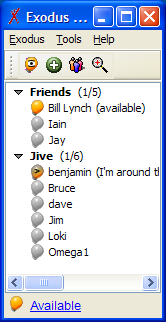

roster能让您跟踪其它用户的有效性（存在）。您可以通过使用像“朋友”和“同事”这样的组来组织用户。其它IM系统如朋友列表，联系列表引用roster。
一个roster实例通过XMPPConnection.getRoster()方法获得，但仅当成功登陆服务器之后对可用。
名薄登陆
在roster中每个用户用一个RosterEntry表示，它包括：
Roster roster = con.getRoster();
for (Iterator i=roster.getEntries(); i.hasNext(); ) {
System.out.println(i.next());
}
也可能用方法获得单个登陆，未定义登陆列表，或者获得一个或所有roster组。
presence
roster中的每个登陆有presence与之关联。Roster.getPresence(String user)方法可以返回一个用户Presence的对象，如果用户不在线或您没有预订用户的presence将会返回null。 注意：一般而言，presence预订一般受用户是否在roster中的约束，但这并不适应所有情况。
一个用户可以有在线或离线两种presence。当用户在线时，他们的可能包含外延信息，如他们正在做什么，他们是否愿意被打扰等等。参考Presence类以获得更多细节信息。
监听roster和presence的变化
roster类的典型应用就是显示组的树型视图和含有当前presence值的登陆。作为一个例子，参考右图所示的一个Exodus XMPP客户端的roster。
presence信息很可能经常变化，roster登陆也可能经常改变或被删除。 为了监听roster和presence数据的变化，您应该使用RosterListener。下面的代码片段注册了一个roster的RosterListener，它能够在标准输出中打印任何presence的变化。一个标准的客户端可以使用类似的代码用变化的信息来更新roster用户界面。
final Roster roster = con.getRoster();
roster.addRosterListener(new RosterListener() {
public void rosterModified() {
// 这个例子中忽略这个事件。
}
public void presenceChanged(String user) {
// 如果presence无效，将会打印"null"，
// 这对本例来说很不错。
System.out.println("Presence changed: " + roster.getPresence(user));
}
});
向roster中添加登陆
roster和presence使用一种基于许可的模式，用户只有在被许可的情况下才能被添加到别人的roster中。这样可以保护用户的隐私因为只有经核准的其它用户才能查看他们的 presence信息。因此，只有当其它用户接受您的请求时您才能添加新的roster登陆。
如果一个用户请求presence预订，因此他们可以把您添加到他们的roster中，您必须接受或拒绝该请求。 Smack通过以下三种方式中的一种处理presence预订请求：